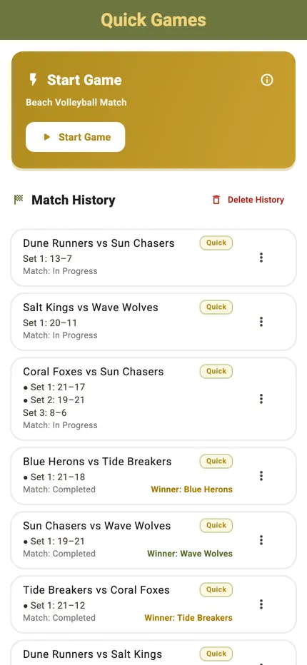
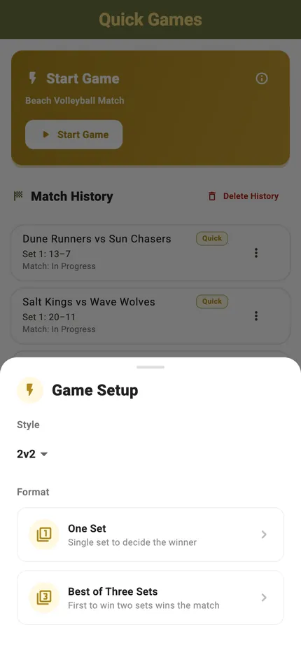
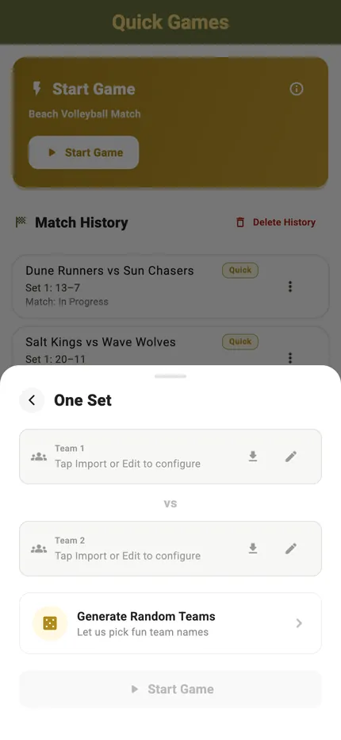
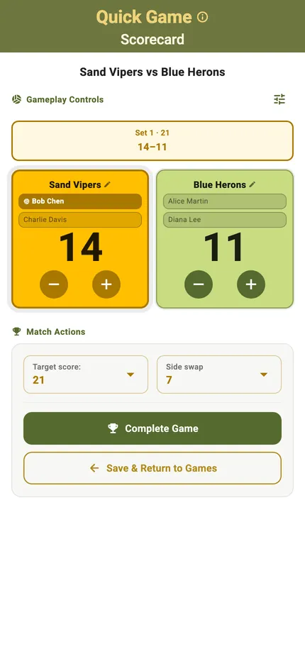
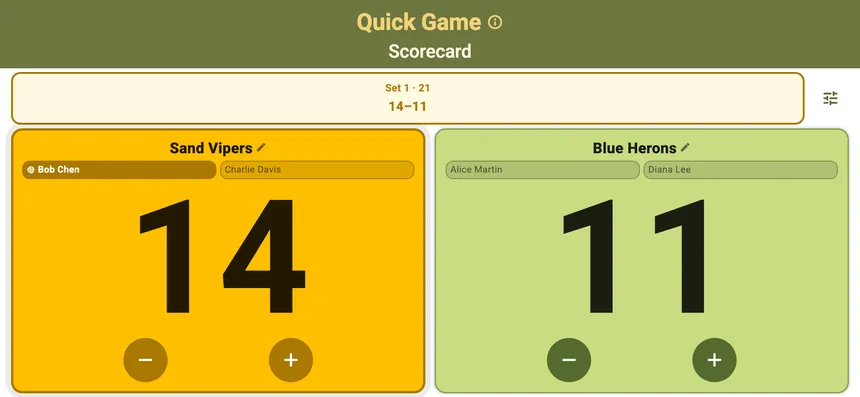
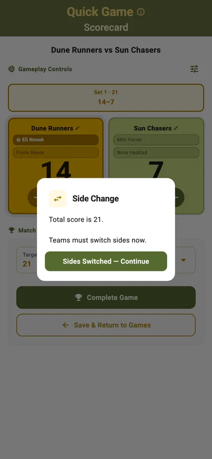
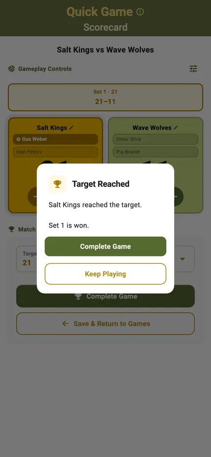
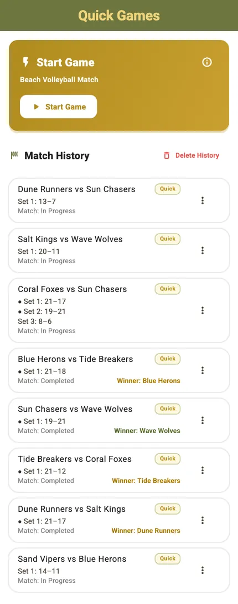

Der shot-Block in zwei Formen
Derselbe Inhalt, links gestapelt, rechts zweispaltig — die volle Quick-Game-Erzählung
aus tools/specs/quick-game.json, neun Karten mit Screenshot. Schmaler als
620 px fallen beide Formen zusammen: Text zuerst, Bild darunter. Fenster schmal ziehen,
dann siehst du das.
A · gestapelt
Bild über der Bildunterschrift. Fügt sich in den vorhandenen Stapel ein.
Quick Games sit at the top of the TournaQ Arena, above the tournament formats. The list keeps every match you have scored.


One sheet, and most of it is optional. The only thing you truly need is two team names — and TournaQ will invent those if you want.


Built for one hand at the side of a court: big targets, the serving side marked, and undo for when the call goes the other way.



The match ends itself when someone reaches the target, and what happened is kept on the device without you saving anything.


B · nebeneinander
Bild links, Text rechts — die Form der Website-Modus-Seiten.
Quick Games sit at the top of the TournaQ Arena, above the tournament formats. The list keeps every match you have scored.
One sheet, and most of it is optional. The only thing you truly need is two team names — and TournaQ will invent those if you want.
Built for one hand at the side of a court: big targets, the serving side marked, and undo for when the call goes the other way.
The match ends itself when someone reaches the target, and what happened is kept on the device without you saving anything.